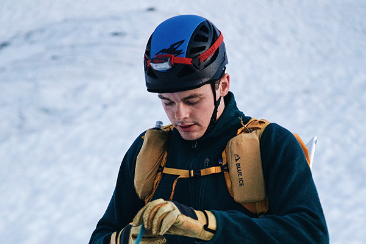
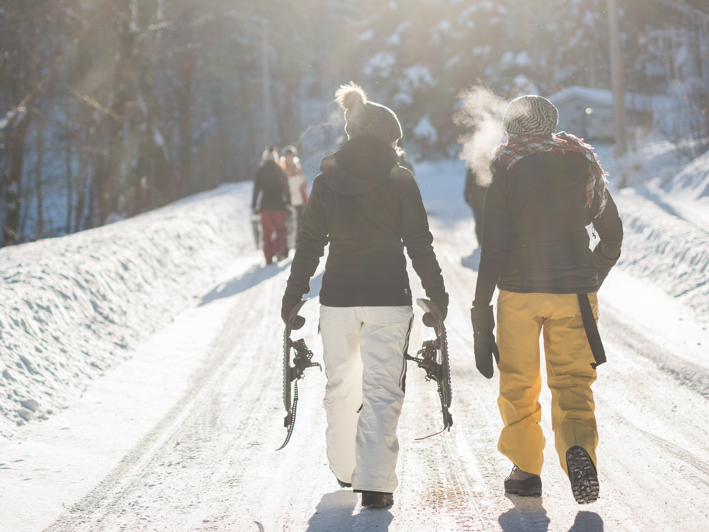

Upptäck Friheten med Våra Helikopterlyft
Välkommen till det ultimata äventyret och friheten som endast helikopterlyft kan erbjuda! På SnowWhile Heli är vi stolta över att erbjuda skräddarsydda helikopterlyft som tar dig till otillgängliga bergstoppar, orörda puderfält och avlägsna skiddestinationer. Vår passion är att leverera oförglömliga helikopterupplevelser som öppnar upp en helt ny värld av skidåkning och äventyr för dig och dina vänner.

Våra Erfarna Guider - Din Nyckel till Oförglömliga Äventyr
Våra erfarna guider är hjärtat av SnowWhite Heli. De utgör kärnan i varje helikopterlyft och är avgörande för att skapa en oförglömlig upplevelse. Genom att förena säkerhet, kunskap och en passion för äventyr blir våra guider din pålitliga följeslagare när du utforskar våra otillgängliga bergslandskap.Våra guider är passionerade om de destinationer de tar dig till. De har djup lokalkännedom om områdets terräng, väderförhållanden och de bästa platserna för skidåkning. Detta säkerställer att du alltid får en enastående upplevelse oavsett om du är nybörjare eller erfaren skidåkare.

Resa och Hotell
På SnowWhite Heli erbjuder vi mer än bara helikopterlyft. Vi vill göra din skidresa till en heltäckande och minnesvärd upplevelse. Därför har vi skapat vårt "Resa och Hotell" -paket som inkluderar allt du behöver för en perfekt vintersemester. Med vårt paket tar vi hand om allt från början till slut. Det inkluderar inte bara flygresan till och från ditt resmål utan även boende på högklassiga hotell nära skidområdet. Så du kan slappna av och njuta av hela resan utan bekymmer.

Utrustning och Förberedelse
För att göra din skidupplevelse så smidig och bekväm som möjligt erbjuder vi möjligheten att hyra all den utrustning du behöver för ditt äventyr med SnowWhite Heli. Vi har ett brett utbud av skidutrustning tillgänglig för uthyrning, inklusive skidor, snowboards, kläder och mer. Vi välkomnar också gäster som föredrar att använda sin egen skidutrustning. Om du känner dig mer bekväm med dina egna prylar är det självklart tillåtet att ta med dem. Vi finns här för att göra din resa så enkel och problemfri som möjligt.